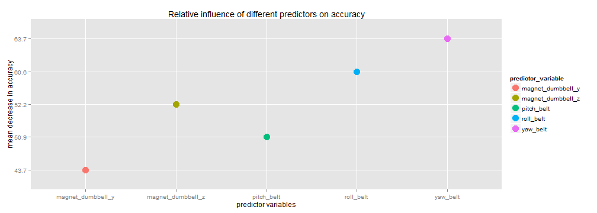

title: Prediction of activity of the subject through analysis of data from wearable devices author: "Sandip Biswas" date: "Friday, February 20, 2015"
output: html_document
Introduction
The group Groupware@LES conducted an experiment and collected data from wearable devices to recognize human activity. The details and the experimental data are given in their website. The data is collected from different experimental subjects performing excercises in different positions. The goal of this project is to train a model such that from the wearable device data, one can predict the position of excercise.
Data download and cleaning
We download the data and inspect it.
if(!file.exists("C:/Users/sandip/Documents/Coursera/course8/HAR.csv")){
download.file(url ="http://d396qusza40orc.cloudfront.net/predmachlearn/pml-training.csv", destfile="C:/Users/sandip/Documents/Coursera/course8/HAR.csv", mode="wb")
wearabledata <- read.csv(file = "C:/Users/sandip/Documents/Coursera/course8/HAR.csv", header=TRUE, na.strings = c("#DIV/0!","NA"))
}We treat the $"classe"$ as response variable and need to decide on a set of predictor variables from $159$ variables. To clean up the data set, we note that there are several missing $NA$ values. To estimate the columns that have large number of $NA$ and remove them.
percentNA <- function(vec){
NApercent <- round(sum(is.na(vec))/length(vec)*100,1)
return(NApercent)
}
wearable.list <- as.list(wearabledata)
NAwearable <- lapply(X=wearable.list,FUN=percentNA)
wearableclean <- wearabledata[,-which(NAwearable>=90)]Model training
The number of variables have reduced to $59$. By inspection we see that some of them are related to index, timestamp etc. We do not consider them and consider only the predictor variables that are directly related to $classe$. We consider $user name$ as a predictor variable as we presume same subjects would perform activities in similar fashion and the training model should accomodate that. We prepare the training dataset and extract a testing data set for cross validation.
library(caret)
set.seed(12)
inTrain <- createDataPartition(y=wearableclean$classe,
p=0.7, list=FALSE)
training <- wearableclean[inTrain,][-c(1,3:7)]
testing <- wearableclean[-inTrain,][-c(1,3:7)]We train a model based on random forest on the training data set and will cross-validate the model on the validation data set to estimate the out of sample error
library(randomForest)
set.seed(14)
rfModel <- randomForest(x=training[,1:53],y=training[,54],mtry=8,importance=TRUE)The summary of the random forest model is
##
## Call:
## randomForest(x = training[, 1:53], y = training[, 54], mtry = 8, importance = TRUE)
## Type of random forest: classification
## Number of trees: 500
## No. of variables tried at each split: 8
##
## OOB estimate of error rate: 0.52%
## Confusion matrix:
## A B C D E class.error
## A 3902 3 1 0 0 0.001024066
## B 7 2646 5 0 0 0.004514673
## C 0 18 2374 4 0 0.009181970
## D 0 0 25 2226 1 0.011545293
## E 0 0 3 5 2517 0.003168317
The relative influence of different predictors can be explored by looking at their measures

Estimation of out of sample error and Cross Validation
The out of sample error can be estimated by the Out-of-bag error estimate in the randomForest model. The OOB error rate is $0.52$ percent. If we use the validation set for cross validation, and calculate the confusion matrix,
prediction <- predict(rfModel, newdata = testing)
cMatrix <- confusionMatrix(prediction,testing$classe)
print(cMatrix)## Confusion Matrix and Statistics
##
## Reference
## Prediction A B C D E
## A 1673 5 0 0 0
## B 0 1130 7 0 0
## C 0 4 1018 8 2
## D 0 0 1 955 2
## E 1 0 0 1 1078
##
## Overall Statistics
##
## Accuracy : 0.9947
## 95% CI : (0.9925, 0.9964)
## No Information Rate : 0.2845
## P-Value [Acc > NIR] : < 2.2e-16
##
## Kappa : 0.9933
## Mcnemar's Test P-Value : NA
##
## Statistics by Class:
##
## Class: A Class: B Class: C Class: D Class: E
## Sensitivity 0.9994 0.9921 0.9922 0.9907 0.9963
## Specificity 0.9988 0.9985 0.9971 0.9994 0.9996
## Pos Pred Value 0.9970 0.9938 0.9864 0.9969 0.9981
## Neg Pred Value 0.9998 0.9981 0.9984 0.9982 0.9992
## Prevalence 0.2845 0.1935 0.1743 0.1638 0.1839
## Detection Rate 0.2843 0.1920 0.1730 0.1623 0.1832
## Detection Prevalence 0.2851 0.1932 0.1754 0.1628 0.1835
## Balanced Accuracy 0.9991 0.9953 0.9947 0.9950 0.9979
The accuracy of the model is very high, $0.996$, hence the error estimate is very close to the estimated OOB error. We can use this model to predict the activity ("classe") in the testing set.